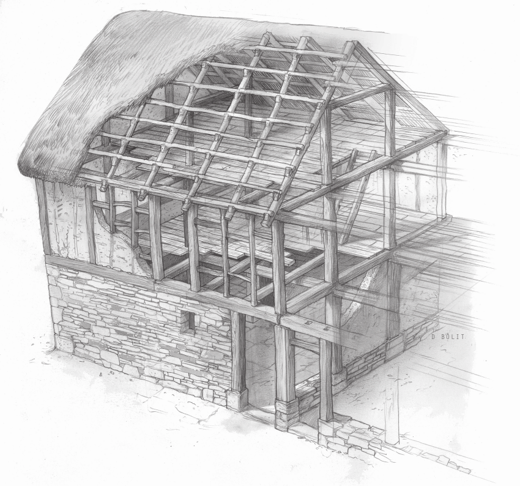

Index old

¡Bienvenidos al curso de Estructuras Resistentes para 1º ESO!
En este curso descubrirás cómo funcionan las construcciones que nos rodean, desde puentes y edificios hasta torres y grúas. Las estructuras están presentes en todo lo que nos sostiene y protege, y entender sus principios te permitirá saber cómo resisten fuerzas, soportan peso y mantienen su equilibrio.
Aprenderás qué hace que una estructura sea estable, los diferentes tipos de esfuerzos que actúan sobre ella y cómo diseñar tus propias construcciones de manera eficiente y segura. ¡Prepárate para explorar el fascinante mundo de la ingeniería y la arquitectura!
¿Qué aprenderás en este curso?
A lo largo de este curso, descubrirás los principios básicos de las estructuras resistentes y su importancia en el mundo que nos rodea. Entre los temas principales que estudiaremos se incluyen:
üîπ Tipos de estructuras: Aprenderás a diferenciar entre estructuras naturales y artificiales, as√≠ como sus caracter√≠sticas principales.
üîπ Esfuerzos y cargas: Descubrirás c√≥mo actúan las fuerzas (tracci√≥n, compresi√≥n, flexi√≥n, torsi√≥n y cortante) sobre diferentes elementos estructurales.
üîπ Elementos de una estructura: Analizaremos vigas, pilares, arcos, tirantes y otros componentes clave en la construcci√≥n.
üîπ Estabilidad y rigidez: Entenderás qu√© hace que una estructura sea estable y c√≥mo mejorar su resistencia mediante triángulaci√≥n, formas curvas y materiales adecuados.
üîπ Dise√±o y construcci√≥n: Aplicarás lo aprendido para crear tus propias estructuras, probando su eficacia y optimizando su forma.
Al finalizar, ¡podrás identificar c√≥mo funcionan las construcciones a tu alrededor e incluso dise√±ar tus propias estructuras resistentes! üèóÔ∏èüí°
¿Por qué es importante aprender sobre estructuras resistentes?
Las estructuras son la base de todo lo que nos rodea: edificios, puentes, torres e incluso elementos cotidianos como muebles o vehículos. Aprender sobre ellas te ayudará a:
✅ Entender el mundo que te rodea – Descubrirás cómo se sostienen las construcciones y por qué algunas son más estables que otras.
✅ Desarrollar pensamiento lógico y creativo – Aprenderás a analizar problemas de diseño y a buscar soluciones eficientes.
✅ Mejorar tus habilidades técnicas – Sabrás identificar los materiales y formas más adecuados para resistir fuerzas y cargas.
✅ Aplicar conocimientos en la vida real – Desde construir maquetas hasta entender la ingeniería detrás de grandes obras, este aprendizaje tiene usos prácticos.
Además, este curso sienta las bases para futuros estudios en arquitectura, ingenier√≠a civil o dise√±o industrial, ¡abri√©ndote puertas a profesiones fascinantes! üèóÔ∏èüîß
Metodología del curso
Este curso seguirá un enfoque dinámico y participativo, combinando teoría y práctica para que aprendas de manera activa y divertida. Las actividades principales incluirán:
-
Clases teóricas interactivas: Explicaciones claras con ejemplos reales (puentes, edificios, torres) y demostraciones en clase.
-
Talleres prácticos: Construcción de estructuras con materiales sencillos (palillos, cartón, espaguetis) para experimentar con su resistencia.
-
Análisis de estructuras famosas: Estudiaremos casos reales (como la Torre Eiffel o los puentes colgantes) para entender su diseño.
-
Proyectos en equipo: Diseñaréis y construiréis vuestras propias estructuras, poniendo a prueba su estabilidad y capacidad de carga.
-
Retos y competiciones: ¡Demostrad vuestras habilidades en desafíos como "¿Quién construye la torre más alta y estable?" o "El puente que aguanta más peso"!
-
Evaluaciones prácticas: No habrá exámenes aburridos, sino pruebas creativas donde apliquéis lo aprendido.
El objetivo es que aprendas haciendo, desarrolles tu ingenio y, sobre todo, ¡que te diviertas explorando el mundo de las estructuras! üèóÔ∏èüí°
Objetivos del curso
Al completar este curso, habrás desarrollado competencias clave en ingeniería estructural que te permitirán:
-
Analizar estructuras: Identificar los elementos principales (vigas, columnas, tirantes) y los esfuerzos que soportan (tracción, compresión, flexión).
-
Calcular resistencias: Aplicar principios básicos para determinar la estabilidad de diferentes estructuras ante diversas cargas.
-
Diseñar soluciones: Crear tus propias estructuras eficientes seleccionando materiales y formas adecuadas para cada necesidad.
-
Resolver problemas: Diagnosticar fallos estructurales y proponer mejoras en diseños existentes.
-
Trabajar como ingeniero: Desarrollar proyectos completos desde el boceto inicial hasta la construcción final, documentando el proceso técnico.
-
Aplicar tecnología: Utilizar herramientas digitales para simular y evaluar el comportamiento de las estructuras.
¡Al terminar, tendrás las bases para convertirte en un aut√©ntico dise√±ador de estructuras! üåâüìê
¡Comencemos!
Prepárate para sumergirte en el fascinante mundo de las estructuras. Al final del curso, serás capaz de ver el mundo desde una nueva perspectiva, entendiendo cómo las cosas funcionan y cómo puedes crear tus propios inventos.
¡Manos a la obra! üöÄ